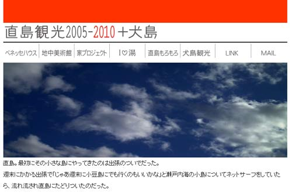
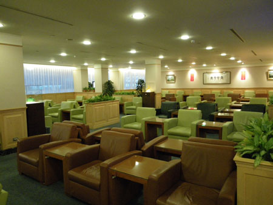

カテゴリ: 旅行
-
ファーストクラスとバリのゾンビタクシー②
我々は浮かれていた。 いや、マイルでファーストクラスに乗るひとは必ず浮かれるだろうけど。 バリ行きは午前便。 カウンターが開く前から空港に到着し、ファーストクラスカウンター前のソファーでそわそわしてい…

-
ファーストクラスとバリのソンビタクシー①
8年間…色々あったなー！と、ひとつひとつ思い出しては頭の中のノートに草稿を書き出してみるものの、年月によって記憶の色彩は色あせて、劣化していくのはまだしも、テレビやインターネット上の溢れんばかりの情報…

-
狂食祭
仕事納め後、狂食祭に突入いたしました。 祭り会場は九州宮崎。 というわけで、まずはイタリアン。アクアミネラーレ。クリスマスワイン会。 フォアグラクリームのシュー、生牡蠣、キッシュ、ローストビーフ…

-
カニの金沢(1)タレルのガスオーブン（ガスワークス）
カニ友達とカニ食べ突貫金沢紀行。 羽田ー小松って初めて利用したけど、ちょっとしか飛行時間めちゃくちゃ短いのねー。 シートベルト着用サインが消えている時間の短いこと… というわけで、ちょっとだけ観光…

-
台湾 変身写真
1ヶ月前の台湾旅行。 こっそり変身写真なるものに挑戦してました。えへへ。 アルバムがようやく届いたのだけど、あははー立派にレタッチ入れられてるわー。 私も仕事でフォトレタッチ作業を行うものだから、レ…

-
台北4
さて最終日。 昨晩は「ゴ」が出なかったみたい。ちょっと肌寒かったせいかなー…とその代わり起きたらノドが痛い。 あー！風邪引きはじめだー。 というわけで、薬局でトローチ購入。 錠剤のパックが毒色ですが…

-
台北3
さて3日目です。 昨晩も、ドミトリーの女の子たちが「ゴ」の方とお戯れ。 まーこんな感じのとこだから「ゴ」のお方も大所帯だろーなー MRTに乗って西門に移動 招き猫。結構店の前とかでみかける。…

-
台北2
台北2日目です。 昨晩は、早々に寝たのだけど、夜中、ドミトリーの女の子がきゃあきゃあ言っている声で目が覚めた。 どーも「ゴ」の方がお出ましになった様子。 キッチンは清潔とは言えない感じだったもんなー。…

-
ぶらり台湾・台北
JALのマイレージが直近で1万5千マイルほど消失することが判明し、急遽出掛けてまいりました。 期限マイル分を使おうとゆーことで、行き先は台北。 成田では特に見るものもないので、ギリギリチェックインして…

-
直島観光2005-2010+犬島
ようやくUPいたしました。直島観光リニューアル。 今回は犬島観光も！ ≫こちらから直島観光

-
不思議なプロペラ
先日、プロペラ機DHC8-Q400に乗ってきました。 プロペラはギリシャのミコノスに行った時以来かも。 あまり評判のよくないボンバルディア機だったけど、乗り心地は上々。揺れも少なめなような。 もとも…
-
こないだフェリー
先日の旅行のことをすこし。 メインは直島観光だったのだけど、こちらの記録は別途また「直島観光2010」としてまとめる予定として、その他のことをすこし。といっても、旅のほとんどは船に乗っていて、どっかに…

-
フクロウ三昧
しばらく放置しておりました。 一度放置するとなかなか書くきっかけを失うものですねー。…と言い訳してみたりして… ちょっと変な旅をしてました。 ヘンと言っても、まー国内なのでたかがしれているのだけど、飛…

-
女子鉄！(2)
さて、2日目です。 昨日は、最後の鈍行でかなり疲労困憊だったのだけど、どうにか早朝起床！ 始発から飛ばしますヨ！ 2日目のテーマはVIP。 グリーン車で大分まで行き、ゆふいんの森号で博多。 んでもって…

-
台湾からかえる
恐ろしいことに朝7時の便ですよ… ホテルのおねーさんもびっくりしてましたよ… ラウンジも貸し切りですよ ホテルは朝食付きだったのだけど、食べられず、サンドイッチを作ってくれました。 いいホテル…

-
台湾
というわけで、台湾到着。 柿男子がお出迎え。WiFiの広告大使（？）のよーだけど。 柿って台湾では縁起のよい象徴のひとつみたい。でも、これはどーなんだろか。 なんだか一日中フリーのWiFiスポットでネ…

-
行列すごい…すごすぎる…
旅のあれこれをぽちぽちUPちゅうです。まだ途中です。 ぜんぶUPが終われば、この記事を消す予定ですー。って忘れそうだな…UP終了です！ そいえば、あちこちからインフル大丈夫～？と言われてましたが大丈夫…
-
CDG→TPE
パリの一週間も終わり。 CDG空港に戻ってまいりました。免税店を覗きたいとこでもあるけどユーロが強くてなんもかんも高いから早々にラウンジに。 素っ気ない倉庫の入り口みたいなトコにあって、ベルを慣らさな…

-
その他街あるき
なんだかんだで1週間いたので、目的もなく町歩きできたのが良かったな。 アレしなきゃコレしなきゃ、ドコ行かなきゃ、ソコ行かなきゃってばかりの旅はやっぱし疲れる。 一日ぐらい「なんにも予定のない日」ってゆ…

-
Re
2日目から部屋を移動。 天窓のあるステュディオ。バトミントンができるぐらい広くて天井が高い。 80%ぐらいIKEA商品で構成されてます（ワタクシ調べ） ミロの絵画っぽい部屋。 暖房×3、キッチン、冷…

-
バスティーユ骨董市
今回の旅行でたのしみにしたのが骨董市 まずはモントレイユの市 って！骨董なのかーこれはー とゆーよーなガラクタが多いー。わけのわからないケーブルとかパイプとかネジとか。 モントレイユの市は生活密着系…

-
オペラ座とか
オペラガルニエ。 通称日本人通りの先にあるので、○○観光とか○○ツアーとかのワッペンを付けた方々が多く見られますル。 でも、ホントにヴィトンの紙袋をぶら下げている日本女子がいるのには驚いた。 たぶん台…

-
シテ島とかポンピドゥーとか
シテ島に。 前回シテにはどーゆーわけかコンシェルジェリーとゆー監獄メインで行ってしまったので サントシャペルをみてなかったのでした。 ガイドブックとかにもコンシェルジェリーより、星が多いんだけどなー …

-
ベルサイユとかオルセーとか
ベルサイユです。 ちいさいときに、アニメ「ベルサイユのバラ」を見て 「これはエッチなやつだ！」「わるいオトナのやつだ！」と思いながら見ていたワタシ。 あの、裸＆薔薇が絡まるオープニングはあまりにも衝撃…

-
ルーブル
ルーブルです。 美術館といえばルーブル。 あれこれ美術の教科書にのっている作品があるルーブル。 とにかく広いとしか言いようがないよー！ ああ…時差ぼけ。 仲良し親子のコンポジション。 ガラ…

-
オランジュリー
いきなり初日からオランジュリーに。 行くつもりなかったけど、ミュージアムパスを買うついでに入っちゃった。 パリに行きたかった理由の一つがこのオランジュリーだったのだけどさて。 地中美術…

-
TPE→CDG
朝はウーロンティー フルーツとかサラダとか出て。 やっぱりお粥だー！おいしい！ このオボロみたいなのってなんだー。けっきょくちょこっとしか食べなかった。 CDG空港2タミ？ 味のある空港。…

-
台北行き
ひさしぶりの旅行です。 トーキョーのお仕事中、「あーどっか行きたいどっか行きたい」と念仏唱え、よーやく這々の体で片付け倒して、よーやく。 と、思ったら、新型インフル騒動。 行けるか？行けるのか？行って…

-
たびってます
間があいちゃいましたー。 仕事に燃え尽き炭となって、よーやく動けるよーになったかなーとゆーわけで、旅に出ております。 今は、トランジットで台北桃園空港でチャーハン食べたり、ビール飲んだり。 このあと…

-
ちょびっと日帰り
九州3日間バス乗り放題1万円とゆーのがあると知り、ちょびっと旅行。 長距離高速バスに乗るの久しぶりだー。 結構ゆったり目でらくちん。 なぜか一番前の席だった。一番前の席って、足が伸ばせないから あんま…

-
川俣 観光
たびたび宮崎。 んがしかし、大型台風接近とな！ いつもなら、「まーでも飛行機飛ぶだろーなー…」と、なんの根拠もない確信をもつ普段のワタクシなのだけど、なんの虫の知らせか、前日になってすべての仕事をキャ…

-
あしたから
台風接近の宮崎に行ってきますー。 ちょいとレスが遅れたりメールのお返事が遅れるかもしれませんが、 よろしくお願いいたします。。。 皆様も台風接近お気をつけくださいませ！ では行ってきまーす！ お…